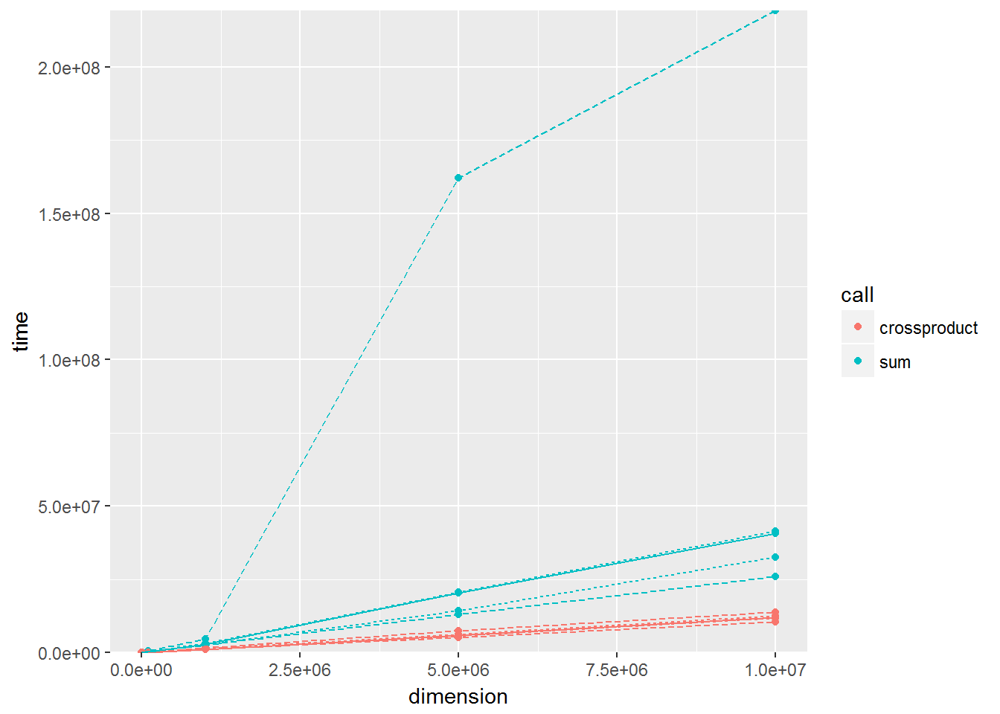

14 Profiling
14.1 Has somebody already solved the problem?
Q: What are faster alternatives to
lm? Which are specifically designed to work with larger datasets?A: Within the Cran task view for HighPerformanceComputing we can find for example the
speedglmpackage and it’sspeedlm()function. We might not gain any performance improvements on small datasets:stopifnot(all.equal( coef(speedglm::speedlm(Sepal.Length ~ Sepal.Width + Species, data = iris)), coef(lm(Sepal.Length ~ Sepal.Width + Species, data = iris)))) microbenchmark::microbenchmark( speedglm::speedlm(Sepal.Length ~ Sepal.Width + Species, data = iris), lm(Sepal.Length ~ Sepal.Width + Species, data = iris) ) #> Unit: microseconds #> expr #> speedglm::speedlm(Sepal.Length ~ Sepal.Width + Species, data = iris) #> lm(Sepal.Length ~ Sepal.Width + Species, data = iris) #> min lq mean median uq max neval cld #> 1166.033 1350.414 1538.159 1461.665 1586.112 6451.117 100 b #> 979.453 1080.257 1201.307 1172.447 1274.351 1714.043 100 aHowever on bigger datasets it can make a difference:
eps <- rnorm(100000) x1 <- rnorm(100000, 5, 3) x2 <- rep(c("a", "b"), 50000) y <- 7 * x1 + (x2 == "a") + eps td <- data.frame(y = y, x1 = x1, x2 = x2, eps = eps) stopifnot(all.equal( coef(speedglm::speedlm(y ~ x1 + x2, data = td)), coef(lm(y ~ x1 + x2, data = td)))) microbenchmark::microbenchmark( speedglm::speedlm(y ~ x1 + x2, data = td), lm(y ~ x1 + x2, data = td) ) #> Unit: milliseconds #> expr min lq mean #> speedglm::speedlm(y ~ x1 + x2, data = td) 54.48644 63.22691 93.66772 #> lm(y ~ x1 + x2, data = td) 92.19462 100.85427 131.32081 #> median uq max neval cld #> 69.75263 158.1982 184.8288 100 a #> 106.57007 191.4855 218.1433 100 bFor further speedinprovements, you might consider switching your linear algebra libraries as stated in
?speedglm::speedlmThe functions of class ‘speedlm’ may speed up the fitting of LMs to large data sets. High performances can be obtained especially if R is linked against an optimized BLAS, such as ATLAS.
Note that there are many other opportunities mentioned in the task view, also some that make it possible to handle data which is not in memory.
When it comes to pure speed a quick google search on r fastest lm provides a stackoverflow thread where someone already solved this problem for us…
Q: What package implements a version of
match()that’s faster for repeated lookups? How much faster is it?A: Again google gives a good recommendation for the searchterm r faster match:
set.seed(1) table <- 1L:100000L x <- sample(table, 10000, replace=TRUE) stopifnot(all.equal(match(x, table), fastmatch::fmatch(x, table))) microbenchmark::microbenchmark( match(x, table), fastmatch::fmatch(x, table) ) #> Unit: microseconds #> expr min lq mean median #> match(x, table) 15809.799 16756.6270 17989.6562 17267.6140 #> fastmatch::fmatch(x, table) 494.125 527.8495 737.0642 698.1165 #> uq max neval cld #> 18626.6410 26862.362 100 b #> 866.3685 1336.851 100 aOn my laptop
fastmatch::fmatch()is around 25 times as fast asmatch().Q: List four functions (not just those in base R) that convert a string into a date time object. What are their strengths and weaknesses?
A: At least these functions will do the trick:
as.POSIXct(),as.POSIXlt(),strftime(),strptime(),lubridate::ymd_hms(). There might also be some in the timeseries packagesxtsorzooand inanytime. An update on this will follow…Q: How many different ways can you compute a 1d density estimate in R?
A: According to Deng and Wickham (2011) density estimation is implemented in over 20 R packages.
Q: Which packages provide the ability to compute a rolling mean?
A: Again google r rolling mean provides us with enough information and guides our attention on solutions in the following packages:zoo
zoo::rollmean(1:10, 2, na.pad = TRUE, align = "left") #> [1] 1.5 2.5 3.5 4.5 5.5 6.5 7.5 8.5 9.5 NA zoo::rollapply(1:10, 2, mean, fill = NA, align = "left") #> [1] 1.5 2.5 3.5 4.5 5.5 6.5 7.5 8.5 9.5 NATTR
TTR::SMA(1:10, 2) #> [1] NA 1.5 2.5 3.5 4.5 5.5 6.5 7.5 8.5 9.5RcppRoll
RcppRoll::roll_mean(1:10, n = 2, fill = NA, align = "left") #> [1] 1.5 2.5 3.5 4.5 5.5 6.5 7.5 8.5 9.5 NAcaTools
caTools::runmean(1:10, k = 2, endrule = "NA", align = "left") #> [1] 1.5 2.5 3.5 4.5 5.5 6.5 7.5 8.5 9.5 NANote that an exhaustive example on how to create a rolling mean function is provided in the textbook.
Q: What are the alternatives to
optim()?A: Depending on the usecase a lot of different options might be considered. For a general overview we would suggest the corresponding taskview on Optimization.
14.2 Do as little as possible
Q: How do the results change if you compare
mean()andmean.default()on 10,000 observations, rather than on 100?A: We start with 100 observations as shown in the textbook:
x <- runif(1e2) microbenchmark::microbenchmark( mean(x), mean.default(x) ) #> Unit: nanoseconds #> expr min lq mean median uq max neval cld #> mean(x) 2566 2933 4861.19 3300.0 3666 65615 100 b #> mean.default(x) 733 734 1598.75 1099.5 1101 48387 100 aIn case of 10000 observations we can observe that using
mean.default()preserves only a small advantage over the use ofmean():x <- runif(1e4) microbenchmark::microbenchmark( mean(x), mean.default(x), unit = "ns" ) #> Unit: nanoseconds #> expr min lq mean median uq max neval cld #> mean(x) 19428 19795 21268.40 19795 20162 74779 100 b #> mean.default(x) 17229 17229 17687.23 17595 17596 27859 100 aWhen using even more observations - like in the next lines - it seems that
mean.defaultdoesn’t preserve anymore any advantage at all:x <- runif(1e6) microbenchmark::microbenchmark( mean(x), mean.default(x), unit = "ns" ) #> Unit: nanoseconds #> expr min lq mean median uq max neval cld #> mean(x) 1738969 1822361 1902253 1905571 1963488 2146585 100 a #> mean.default(x) 1728338 1843072 1901707 1893658 1948641 2306405 100 aQ: The following code provides an alternative implementation of
rowSums(). Why is it faster for this input?rowSums2 <- function(df) { out <- df[[1L]] if (ncol(df) == 1) return(out) for (i in 2:ncol(df)) { out <- out + df[[i]] } out } df <- as.data.frame( replicate(1e3, sample(100, 1e4, replace = TRUE)) ) system.time(rowSums(df)) #> User System verstrichen #> 0.05 0.00 0.04 system.time(rowSums2(df)) #> User System verstrichen #> 0.03 0.00 0.03A:
Q: What’s the difference between
rowSums()and.rowSums()?A:
.rowSums()is defined as.rowSums #> function (x, m, n, na.rm = FALSE) #> .Internal(rowSums(x, m, n, na.rm)) #> <bytecode: 0x000000001c2f9828> #> <environment: namespace:base>this means, that the internal
rowSums()function is called via.Internal()..Internal performs a call to an internal code which is built in to the R interpreter.
The internal
rowSums()is a complete different function than the “normal”rowSums()function.Of course (since they have the same name) in this case these functions are heavily related with each other: If we look into the source code of
rowSums(), we see that it is a wrapper around the internalrowSums(). Just some input checkings, conversions and the special cases (complex numbers) are added:rowSums #> function (x, na.rm = FALSE, dims = 1L) #> { #> if (is.data.frame(x)) #> x <- as.matrix(x) #> if (!is.array(x) || length(dn <- dim(x)) < 2L) #> stop("'x' must be an array of at least two dimensions") #> if (dims < 1L || dims > length(dn) - 1L) #> stop("invalid 'dims'") #> p <- prod(dn[-(id <- seq_len(dims))]) #> dn <- dn[id] #> z <- if (is.complex(x)) #> .Internal(rowSums(Re(x), prod(dn), p, na.rm)) + (0+1i) * #> .Internal(rowSums(Im(x), prod(dn), p, na.rm)) #> else .Internal(rowSums(x, prod(dn), p, na.rm)) #> if (length(dn) > 1L) { #> dim(z) <- dn #> dimnames(z) <- dimnames(x)[id] #> } #> else names(z) <- dimnames(x)[[1L]] #> z #> } #> <bytecode: 0x0000000019357f00> #> <environment: namespace:base>Q: Make a faster version of
chisq.test()that only computes the chi-square test statistic when the input is two numeric vectors with no missing values. You can try simplifyingchisq.test()or by coding from the mathematical definition.A: Since
chisq.test()has a relatively long source code, we try a new implementation from scratch:chisq.test2 <- function(x, y){ # Input if(!is.numeric(x)){ stop("x must be numeric")} if(!is.numeric(y)){ stop("y must be numeric")} if(length(x) != length(y)){ stop("x and y must have the same length")} if(length(x) <= 1){ stop("length of x must be greater one")} if(any(c(x,y) < 0)){ stop("all entries of x and y must be greater or equal zero")} if(sum(complete.cases(x, y)) != length(x)){ stop("there must be no missing values in x and y")} if(any(is.null(c(x,y)))){ stop("entries of x and y must not be NULL")} # Help variables m <- rbind(x, y) margin1 <- rowSums(m) margin2 <- colSums(m) n <- sum(m) me <- tcrossprod(margin1, margin2) / n # Output x_stat = sum((m - me)^2 / me) dof <- (length(margin1) - 1) * (length(margin2) - 1) p <- pchisq(x_stat, df = dof, lower.tail = FALSE) return(list(x_stat = x_stat, df = dof, `p-value` = p)) }We check if our new implementation returns the same results
a <- 21:25 b <- c(21,23,25,27,29) m_test <- cbind(a, b) chisq.test(m_test) #> #> Pearson's Chi-squared test #> #> data: m_test #> X-squared = 0.16194, df = 4, p-value = 0.9969 chisq.test2(a, b) #> $x_stat #> [1] 0.1619369 #> #> $df #> [1] 4 #> #> $`p-value` #> [1] 0.9968937Finally we benchmark this implementation against a compiled version of itself and the original
stats::chisq.test():chisq.test2c <- compiler::cmpfun(chisq.test2) microbenchmark::microbenchmark( chisq.test(m_test), chisq.test2(a, b), chisq.test2c(a, b) ) #> Unit: microseconds #> expr min lq mean median uq max neval #> chisq.test(m_test) 70.381 76.2455 89.40129 83.210 96.223 223.970 100 #> chisq.test2(a, b) 21.995 24.7430 30.67440 27.493 32.258 76.245 100 #> chisq.test2c(a, b) 17.962 20.1620 25.45101 23.277 26.393 111.435 100 #> cld #> c #> b #> aQ: Can you make a faster version of
table()for the case of an input of two integer vectors with no missing values? Can you use it to speed up your chi-square test?A:
Q: Imagine you want to compute the bootstrap distribution of a sample correlation using
cor_df()and the data in the example below. Given that you want to run this many times, how can you make this code faster? (Hint: the function has three components that you can speed up.)n <- 1e6 df <- data.frame(a = rnorm(n), b = rnorm(n)) cor_df <- function(df, n) { i <- sample(seq(n), n, replace = FALSE ) cor(df[i, , drop = FALSE])[2,1] # note also that in the last line the textbook says q[] instead of df[]. Since # this is probably just a typo, we changed this to df[]. }Is there a way to vectorise this procedure?
A: The three components (mentioned in the questions hint) are:
- sampling of indices
- subsetting the data frame/conversion to matrix (or vector input)
- the
cor()function itself.
Since a run of lineprof like shown in the textbook suggests that
as.matrix()within thecor()function is the biggest bottleneck, we start with that:n <- 1e6 df <- data.frame(a = rnorm(n), b = rnorm(n))Remember the outgoing function:
cor_df <- function() { i <- sample(seq(n), n, replace = FALSE) cor(df[i, , drop = FALSE])[2,1] }First we want to optimise the second line (without attention to the
cor()function itself). Therefore we exclude the first line from our optimisation approaches and defineiwithin the global environment:i <- sample(seq(n), n)Then we define our approaches, check that their behaviour is correct and do the first benchmark:
# old version cor_v1 <- function() { cor(df[i, , drop = FALSE])[2,1] } # cbind instead of internal as.matrix cor_v2 <- function() { m <- cbind(df$a[i], df$b[i]) cor(m)[2, 1] } # cbind + vector subsetting of the output matrix cor_v3 <- function() { m <- cbind(df$a[i], df$b[i]) cor(m)[2] } # Use vector input within the cor function, so that no conversion is needed cor_v4 <- function() { cor(df$a[i], df$b[i]) } # check if all return the same result cor_list <- list(cor_v1, cor_v2, cor_v3, cor_v4) ulapply <- function(X, FUN, ...) unlist(lapply(X, FUN, ...)) ulapply(cor_list, function(x) identical(x(), cor_v1())) #> [1] TRUE TRUE TRUE TRUE # benchmark set.seed(1) microbenchmark::microbenchmark( cor_v1(), cor_v2(), cor_v3(), cor_v4() ) #> Unit: microseconds #> expr min lq mean median uq max neval #> cor_v1() 4254.314 5259.6090 5688.6542 5576.3180 5841.7080 13803.241 100 #> cor_v2() 337.970 449.4050 843.8691 610.3260 682.9050 10260.424 100 #> cor_v3() 350.433 523.6335 600.4283 605.1940 667.1425 1062.663 100 #> cor_v4() 326.974 460.9520 567.2473 578.0685 651.3805 957.826 100 #> cld #> b #> a #> a #> aAccording to the resulting medians, lower and upper quartiles of our benchmark all three new versions seem to provide more or less the same speed benefit (note that the maximum and mean can vary a lot for these approaches). Since the second version is most similar to the code we started, we implement this line into a second version of
cor_df()(if this sounds too arbitrary, note that in the final solution we will come back to the vector input version anyway) and do a benchmark to get the overall speedup:cor_df2 <- function() { i <- sample(seq(n), n) m <- cbind(df$a[i], df$b[i]) cor(m)[2, 1] } microbenchmark::microbenchmark( cor_df(), cor_df2() ) #> Unit: milliseconds #> expr min lq mean median uq max neval #> cor_df() 681.12605 819.0233 976.9459 917.0479 1115.2601 1871.8410 100 #> cor_df2() 78.70953 118.7345 246.9907 222.0433 304.6407 675.3762 100Now we can focus on a speedup for the random generation of indices. (Note that a run of linepfrof suggests to optimize
cbind(). However, after rewritingcor()to a version that only works with vector input, this step will be unnecessary anyway). We could try differnt approaches for the sequence generation withinsample()(likeseq(n),seq.int(n),seq_len(n),a:n) and a direct call ofsample.int(). In the following, we will see, thatsample.int()is always faster (since we don’t include the generation of the sequence into our benchmark). When we look intosample.int()we see that it calls two different internal sample versions depending on the input. Since in our usecase always the second version will be called, we also provide this version in our benchmark:seq_n <- seq(n) microbenchmark::microbenchmark( sample(seq_n, n), sample.int(n, n), .Internal(sample(n, n, replace = FALSE, prob = NULL)) ) #> Unit: milliseconds #> expr min lq #> sample(seq_n, n) 21.53328 22.61647 #> sample.int(n, n) 10.23256 10.55660 #> .Internal(sample(n, n, replace = FALSE, prob = NULL)) 10.16878 10.47046 #> mean median uq max neval #> 25.13703 24.28176 26.93438 34.62539 100 #> 12.09360 10.82749 12.46859 52.62575 100 #> 11.43926 10.73603 11.65775 17.19283 100The
sample.int()versions give clearly the biggest improvement. Since the internal version doesn’t provide any clear improvement, but restricts the general scope of our function, we choose to implementsample.int()in a third version ofcor_df()and benchmark our actual achievements:cor_df3 <- function() { i <- sample.int(n, n) m <- cbind(df$a[i], df$b[i]) cor(m)[2, 1] } microbenchmark::microbenchmark( cor_df(), cor_df2(), cor_df3() ) #> Unit: milliseconds #> expr min lq mean median uq max neval #> cor_df() 631.70368 755.94269 852.9936 809.6646 936.6149 1490.2436 100 #> cor_df2() 80.99834 116.23442 209.3948 171.8103 293.0193 594.5985 100 #> cor_df3() 65.40005 84.28988 217.1245 140.5378 288.7853 627.2654 100As a last step, we try to speedup the calculation of the pearson correlation coefficient. Since quite a lot of functionality is build into the
stats::cor()function this seems like a reasonable approach. We try this by working with anothercor()function from theWGNApackage and an own implementation which should give a small improvement, because we usesum(x) / length(x)instead ofmean(x)for internal calculations:#WGCNA version (matrix and vector). Note that I don't use a local setup which uses #the full potential of this function. For furter information see ?WGCNA::cor cor_df4m <- function() { i <- sample.int(n, n) m <- cbind(df$a[i], df$b[i]) WGCNA::cor(m)[2] } cor_df4v <- function() { i <- sample.int(n, n) WGCNA::cor(df$a[i], df$b[i], quick = 1)[1] } #New implementation of underlying cor function #A definition can be found for example here #http://www.socscistatistics.com/tests/pearson/ cor2 <- function(x, y){ xm <- sum(x) / length(x) ym <- sum(y) / length(y) x_xm <- x - xm y_ym <- y - ym numerator <- sum((x_xm) * (y_ym)) denominator <- sqrt(sum(x_xm^2)) * sqrt(sum(y_ym^2)) return(numerator / denominator) } cor2 <- compiler::cmpfun(cor2) cor_df5 <- function() { i <- sample.int(n, n) cor2(df$a[i], df$b[i]) }In our final benchmark, we also include compiled verions of all our attempts:
cor_df_c <- compiler::cmpfun(cor_df) cor_df2_c <- compiler::cmpfun(cor_df2) cor_df3_c <- compiler::cmpfun(cor_df3) cor_df4m_c <- compiler::cmpfun(cor_df4m) cor_df4v_c <- compiler::cmpfun(cor_df4v) cor_df5_c <- compiler::cmpfun(cor_df5) microbenchmark::microbenchmark( cor_df(), cor_df2(), cor_df3(), cor_df4m(), cor_df4v(), cor_df5(), cor_df_c(), cor_df2_c(), cor_df3_c(), cor_df4m_c(), cor_df4v_c(), cor_df5_c() ) #> #> Unit: milliseconds #> expr min lq mean median uq max #> cor_df() 7.885838 9.146994 12.739322 9.844561 10.447188 83.08044 #> cor_df2() 1.951941 3.178821 6.101036 3.339742 3.485085 36.25404 #> cor_df3() 1.288831 1.943510 4.353773 2.018105 2.145119 66.74022 #> cor_df4m() 1.534061 2.156848 6.344015 2.243540 2.370921 234.17307 #> cor_df4v() 1.639997 2.271949 5.755720 2.349477 2.453214 196.49897 #> cor_df5() 1.281133 1.879911 6.263500 1.932696 2.064292 237.83135 #> cor_df_c() 7.600654 9.337239 13.613901 10.009330 10.965688 41.17146 #> cor_df2_c() 2.009124 2.878242 5.645224 3.298138 3.469871 34.29037 #> cor_df3_c() 1.312291 1.926281 4.426418 1.986948 2.094532 87.97220 #> cor_df4m_c() 1.548357 2.179025 3.306796 2.242991 2.355709 23.87195 #> cor_df4v_c() 1.669689 2.255087 27.148456 2.341962 2.490419 2263.33230 #> cor_df5_c() 1.284065 1.888892 3.884798 1.953774 2.078955 25.81583 #> neval cld #> 100 a #> 100 a #> 100 a #> 100 a #> 100 a #> 100 a #> 100 a #> 100 a #> 100 a #> 100 a #> 100 a #> 100 aOur final solution benefits most from the switch from data frames to vectors. Working with
sample.intgives only little improvement. Reimplementing and compiling a new correlation function adds only minimal speedup.To trust our final result we include a last check for similar return values:
set.seed(1) cor_df() #> [1] -0.001441277 set.seed(1) cor_df5_c() #> [1] -0.001441277Vectorisation of this problem seems rather difficult, since attempts of using matrix calculus, always depend on building and handling big matrices in the first place.
We can for example rewrite our correlation function to work with matrices and build a new (vectorised) version of
cor_df()on top of thatcor2m <- function(x, y){ n_row <- nrow(x) xm <- colSums(x) / n_row ym <- colSums(y) / n_row x_xm <- t(t(x) - xm) y_ym <- t(t(y) - ym) numerator <- colSums((x_xm) * (y_ym)) denominator <- sqrt(colSums(x_xm^2)) * sqrt(colSums(y_ym^2)) return(numerator / denominator) } cor_df_v <- function(i){ indices <- replicate(i, sample.int(n, n), simplify = "array") x <- matrix(df$a[indices], ncol = i) y <- matrix(df$b[indices], ncol = i) cor2m(x, y) } cor_df_v <- compiler::cmpfun(cor_df_v)However this still doesn’t provide any improvement over the use of
lapply():ulapply2 <- function(X, FUN, ...) unlist(lapply(X, FUN, ...), use.names = FALSE) microbenchmark::microbenchmark( cor_df5_c(), ulapply2(1:100, function(x) cor_df5_c()), cor_df_v(100) ) #> Unit: milliseconds #> expr min lq mean #> cor_df5_c() 1.098219 1.148988 2.06762 #> ulapply2(1:100, function(x) cor_df5_c()) 228.250897 233.052303 256.56849 #> cor_df_v(100) 263.158918 272.988449 312.43802 #> median uq max neval cld #> 1.864515 2.030201 13.2325 100 a #> 238.665277 247.184900 410.0768 100 b #> 278.648158 291.164035 581.2834 100 cFurther improvements can be achieved using parallelisation (for example via
parallel::parLapply())
14.3 Vectorise
Q: The density functions, e.g.,
dnorm(), have a common interface. Which arguments are vectorised over? What doesrnorm(10, mean = 10:1)do?A: We can see the interface of these functions via
?dnorm:dnorm(x, mean = 0, sd = 1, log = FALSE) pnorm(q, mean = 0, sd = 1, lower.tail = TRUE, log.p = FALSE) qnorm(p, mean = 0, sd = 1, lower.tail = TRUE, log.p = FALSE) rnorm(n, mean = 0, sd = 1).They are vectorised over their numeric arguments, which is always the first argument (
x,a,p,n),meanandsd. Note that it’s dangerous to supply a vector tonin thernorm()function, since the behaviour will change, whennhas length 1 (like in the second part of this question).rnorm(10, mean = 10:1)generates ten random numbers from different normal distributions. The normal distributions differ in their means. The first has mean ten, the second has mean nine, the third mean 8 etc.Q: Compare the speed of
apply(x, 1, sum)withrowSums(x)for varying sizes ofx.A: We compare regarding different sizes for square matrices:
library(microbenchmark) dimensions <- c(1e0, 1e1, 1e2, 1e3, 0.5e4, 1e4) matrices <- lapply(dimensions, function(x) tcrossprod(rnorm(x), rnorm(x))) bench_rs <- lapply(matrices, function(x) fivenum(microbenchmark(rowSums(x), unit = "ns")$time)) bench_rs <- data.frame(time = unlist(bench_rs), call = "rowSums", stringsAsFactors = FALSE) bench_apply <- lapply(matrices, function(x) fivenum(microbenchmark(apply(x, 1, sum), unit = "ns")$time)) bench_apply <- data.frame(time = unlist(bench_apply), call = "apply", stringsAsFactors = FALSE) df <- rbind(bench_rs, bench_apply) df$dimension <- rep(dimensions, each = 5) df$aggr <- rep(c("min", "lq", "median", "uq", "max"), times = length(dimensions)) df$aggr_size <- rep(c(1,2,3,2,1), times = length(dimensions)) df$group <- paste(as.character(df$call), as.character(df$aggr), sep = " ") library(ggplot2) ggplot(df, aes(x = dimension, y = time, colour = call, group = group)) + geom_point() + geom_line(aes(linetype = factor(aggr_size, levels = c("3", "2", "1"))), show.legend = FALSE)
The graph is a good indicator to notice, that
apply()is not “vectorised for performance”.Q: How can you use
crossprod()to compute a weighted sum? How much faster is it than the naivesum(x * w)?A: We can just give the vectors to
crossprod()which converts them to row- and columnvectors and then multiplies these. The result is the dot product which is also a weighted sum.a <- rnorm(10) b <- rnorm(10) sum(a * b) - crossprod(a, b)[1] #> [1] 0A benchmark of both alternatives for different vector lengths indicates, that the
crossprod()variant is about 2.5 times faster thansum():dimensions <- c(1e1, 1e2, 1e3, 1e4, 1e5, 1e6, 0.5e7, 1e7) xvector <- lapply(dimensions, rnorm) weights <- lapply(dimensions, rnorm) bench_sum <- Map(function(x, y) fivenum(microbenchmark(sum(x * y))$time), xvector, weights) #> Warning in microbenchmark(sum(x * y)): Could not measure a positive #> execution time for one evaluation. bench_sum <- data.frame(time = unlist(bench_sum), call = "sum", stringsAsFactors = FALSE) bench_cp <- Map(function(x, y) fivenum(microbenchmark(crossprod(x, y)[1])$time), xvector, weights) bench_cp <- data.frame(time = unlist(bench_cp), call = "crossproduct", stringsAsFactors = FALSE) df <- rbind(bench_sum, bench_cp) df$dimension <- rep(dimensions, each = 5) df$aggr <- rep(c("min", "lq", "median", "uq", "max"), times = length(dimensions)) df$aggr_size <- rep(c(1,2,3,2,1), times = length(dimensions)) df$group <- paste(as.character(df$call), as.character(df$aggr), sep = " ") ggplot(df, aes(x = dimension, y = time, colour = call, group = group)) + geom_point() + geom_line(aes(linetype = factor(aggr_size, levels = c("3", "2", "1"))), show.legend = FALSE) + scale_y_continuous(expand = c(0,0))